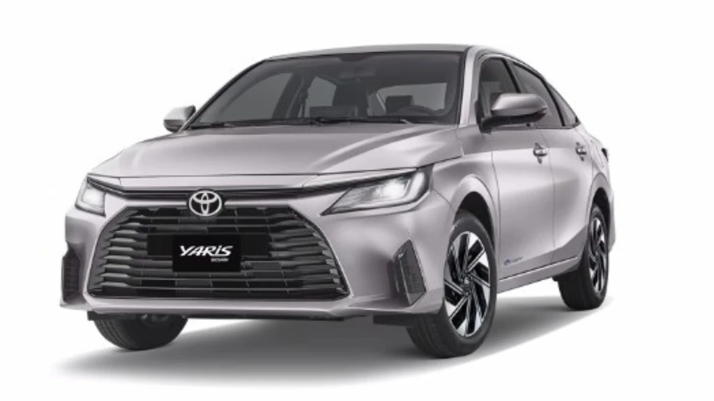
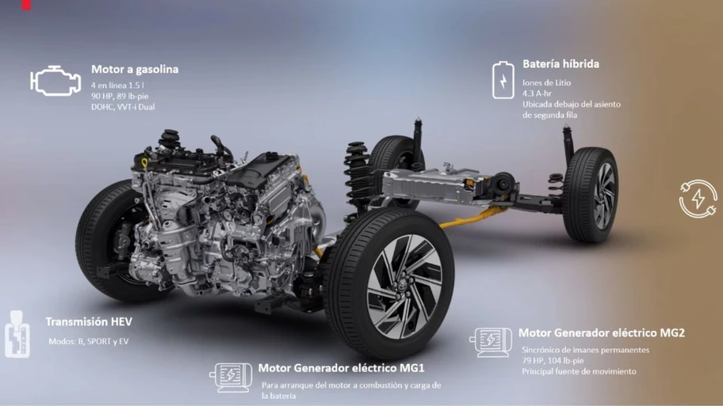
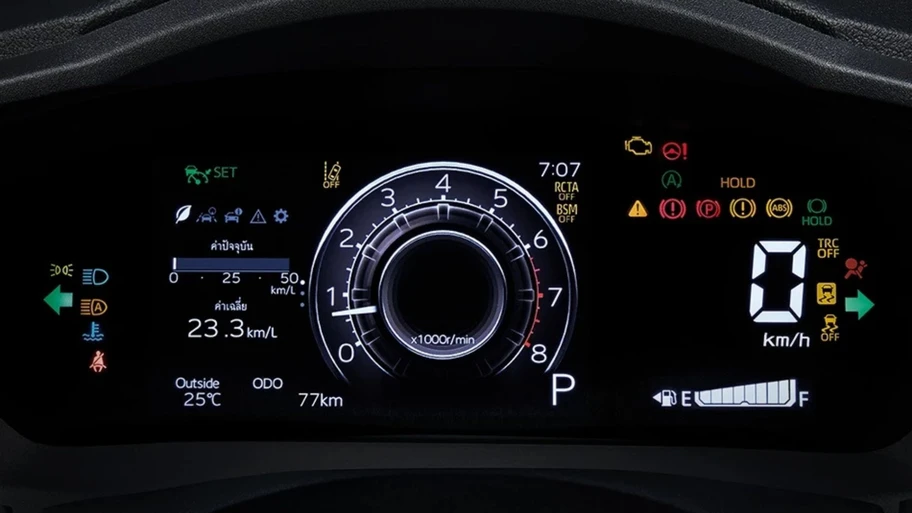
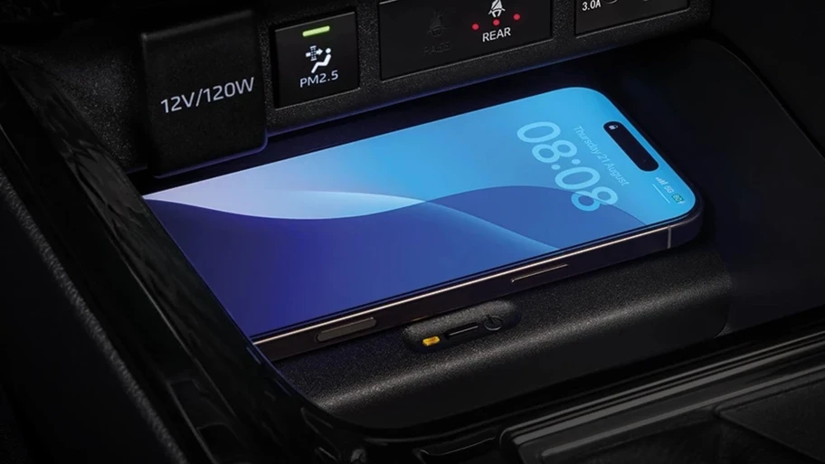

Toyota Yaris Sedán HEV 2026 llega a México un nuevo híbrido bueno, bonito y barato, conoce su precio
Con motor de 1.5 litros, doble propulsión eléctrica y amplia seguridad, el nuevo Yaris híbrido promete ser uno de los autos más eficientes del país.

Si todavía extrañas un híbrido asequible como el Prius C, debes poner mucha atención al auto que tienes frente a tu pantalla, ya que se trata del nuevo Yaris Sedán HEV 2026 el cual significa el regreso de Toyota al segmento de los híbridos autorrecargables de acceso. Importado desde Tailandia, busca atraer a quienes buscan eficiencia, equipamiento y confianza a un precio atractivo.
El nuevo Toyota Yaris Sedán HEV 2026 recurre a un sistema híbrido autorrecargable de cuarta generación, compuesto por un motor a gasolina de 1.5 litros con 90 hp y 89 lb-pie de torque, junto a un motor eléctrico síncrono MG2 de imanes permanentes que genera 79 hp y 104 lb-pie. La potencia combinada alcanza 110 hp, gestionados por una transmisión CVT con siete velocidades simuladas y modos de manejo Sport y EV.
El sistema se completa con un motor generador MG1, encargado de poner en marcha el propulsor a combustión y de recargar la batería de ion-litio de 4.3 A-h, ubicada debajo de los asientos traseros para mantener un centro de gravedad bajo. Con esta configuración, se espera un rendimiento superior a 29 km/l, de acuerdo con cifras del modelo tailandés.

En diseño, esta variante híbrida adopta una parrilla delantera y molduras en color gris brillante, junto con rines de aluminio de 16 pulgadas y neumáticos 195/60. En realidad, distinguirlo del resto será muy difícil ya que estéticamente no habrá mayores cambios con respecto a la versión a gasolina. Estará disponible en una versión denominada: S CVT HEV
Al interior, el Toyota Yaris Sedán HEV 2026 ofrece una pantalla central de 8 pulgadas con Android Auto y Apple CarPlay, así como un display de instrumentos MID de 7 pulgadas, cargador inalámbrico, aire acondicionado automático y salidas de ventilación para la segunda fila.

El sistema de frenado también se moderniza: equipa discos traseros, freno de estacionamiento electrónico (EPB) con función Auto Hold, y un pedal más sensible que mejora la transición entre la frenada regenerativa y la mecánica.
En materia de seguridad, el Yaris HEV incorpora una dotación muy completa. Además de las seis bolsas de aire, incluye el paquete Toyota Safety Sense, con frenado precolisión (PCS), alerta de cambio de carril (LDW), asistencia de trazado de carril (LTA), asistente de mantenimiento (LKA) y control crucero adaptativo (ACC). A esto se suman el Blind Spot Monitor (BSM) y Rear Cross Traffic Alert (RCTA).

El nuevo Toyota Yaris Sedán HEV 2026 inicia ventas en este noviembre y su rival más próximo es el MG3 Hybrid, esto a pesar de ser un hatchback. No obstante, de manera indirecta podrían sumarse el BYD King DM-i, aunque se trate de un híbrido enchufable o incluso el más pequeño Suzuki Dzire Boostergreen, que apenas entra por ser un MHEV.